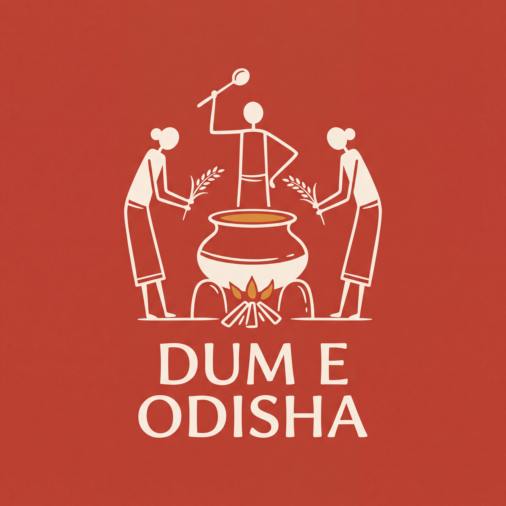
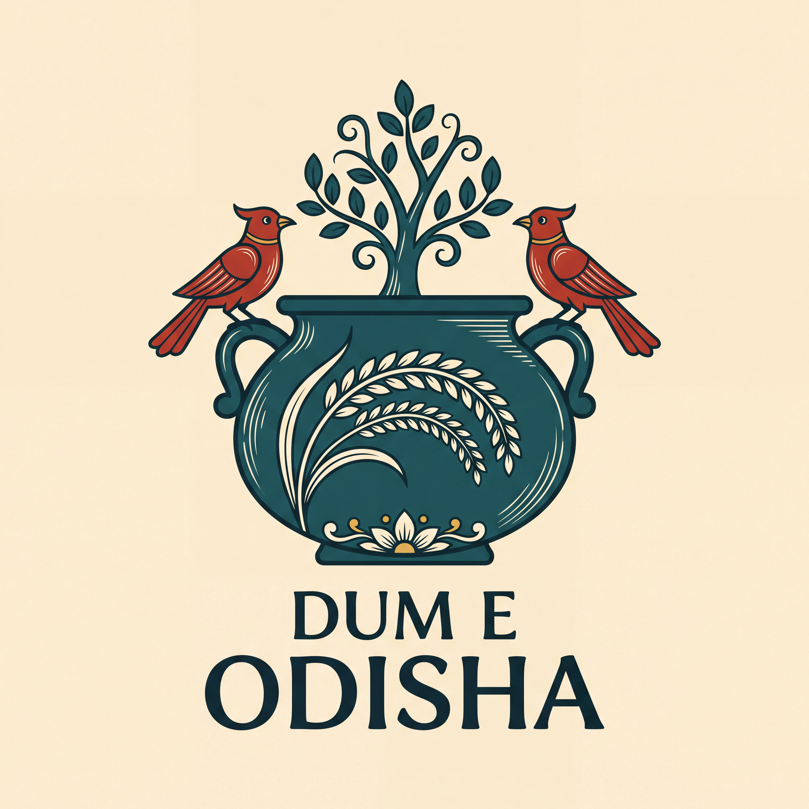
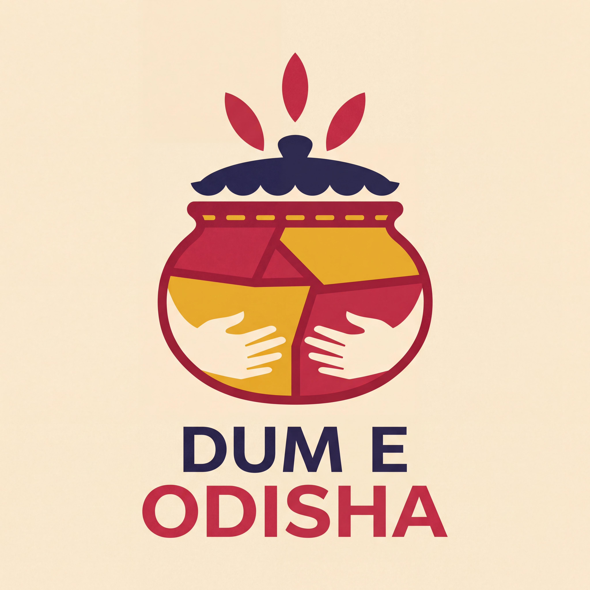
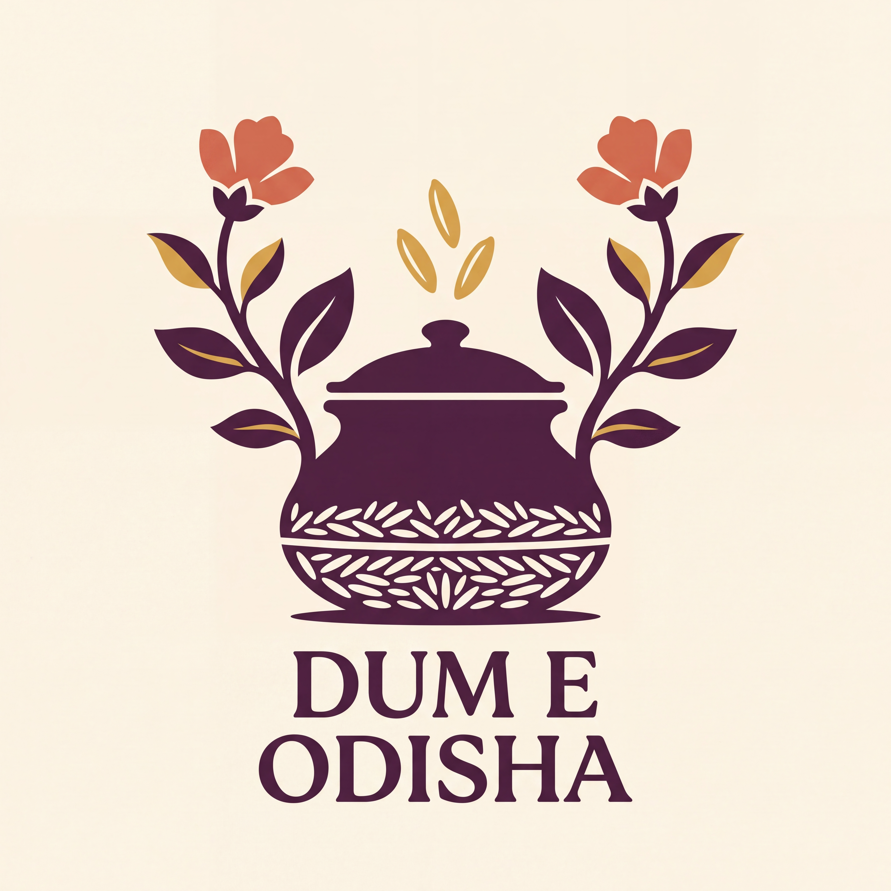
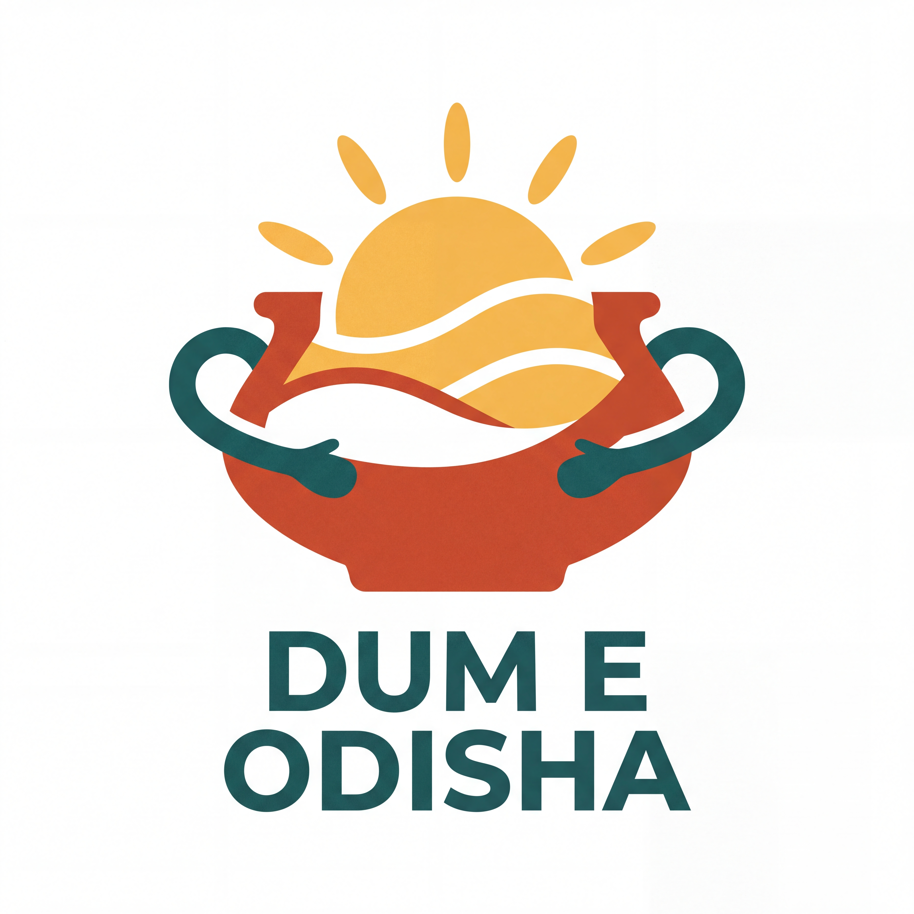
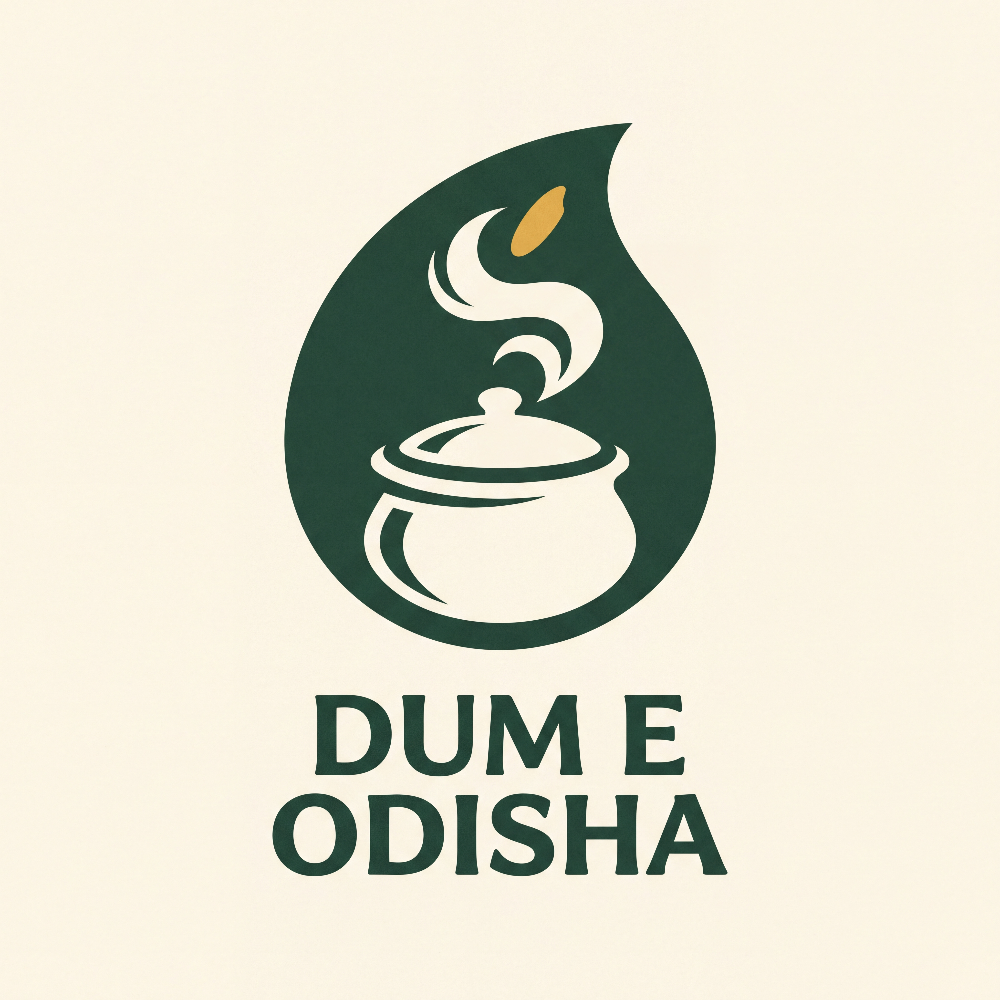
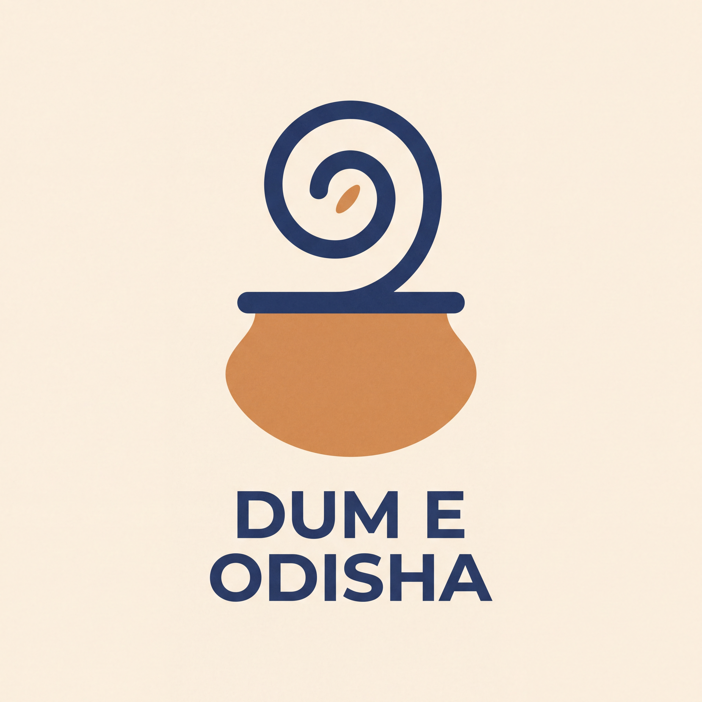

01 / Saura-inspired
Harvest & Hearth
A small community tends one handi: the harvest becomes a meal shared.
Open this brand guide →Traditional craft references and contemporary symbols, explored through ten different logos and complete visual directions.
Each concept has its own logo, colour palette, type direction, illustration language, use rules and packaging mockup. Seven new directions join the three developed illustrated identities. The full name remains Dum E Odisha; the common tagline is Flavour in Every Layer.
Download all 10 brand guides & assetsShowing all 10 concepts

01 / Saura-inspired
A small community tends one handi: the harvest becomes a meal shared.
Open this brand guide →
02 / Pattachitra-inspired
Birds and a flourishing rice motif surround the handi, linking abundance with an aromatic meal.
Open this brand guide →
03 / Pipili appliqué-inspired
Different pieces form one generous vessel, echoing different flavours coming together.
Open this brand guide →04 / Jhoti Chita-inspired
Rice becomes both the meal and a gesture of welcome around the cooking vessel.
Open this brand guide →05 / Odisha community · contemporary folk-inspired
Two people cradle one handi. Their curved arms embrace the vessel; rising rice turns the shared meal into the centre of the symbol.
Open this brand guide →
06 / Mughal botanical-inspired · aroma & abundance
A handi grows into a balanced flowering garden. The pot identifies cooking; the rising grains and botanical rhythm suggest layers of aroma.
Open this brand guide →
07 / Modern flat illustration
Layers of rice rise toward a warm sun: generous flavour and a freshly served meal.
Open this brand guide →
08 / Negative-space symbol
A leaf hides a steaming handi, joining ingredients and dum cooking in a single symbol.
Open this brand guide →
09 / Golden-ratio-inspired geometry
A flowing aroma spiral emerges from a rounded handi, suggesting the unfolding layers of dum cooking.
Open this brand guide →10 / Modern illustrative mascot · care & aroma
A cook holds a handi close, with the face and aroma shaped through negative space. The gesture communicates care and anticipation of the meal.
Open this brand guide →| Approach | What distinguishes it |
|---|---|
| 01 · Harvest & Hearth | Saura-inspired fine narrative figures and communal cooking |
| 02 · The Painted Handi | Pattachitra-inspired contours, birds and rich rice foliage |
| 03 · The Patchwork Feast | Pipili-inspired interlocking patches and festive colour |
| 04 · The Rice Welcome | Jhoti Chita-inspired pale grain linework on mulberry |
| 05 · The Shared Handi | Broad human silhouettes embracing a meal |
| 06 · The Dum Garden | Mughal botanical-inspired flowering handi |
| 07 · The Layered Sun | Modern flat layers, warmth and a sun-shaped rice rhythm |
| 08 · The Hidden Handi | Pot-and-aroma cutout inside a leaf-like silhouette |
| 09 · The Spiral of Dum | Golden-ratio-inspired circular proportions and a rising aroma spiral |
| 10 · The Dum Keeper | Illustrated cook holding a fragrant handi |
These are separate identity routes. Pick a story and visual language before refining lettering, small-size variants and production artwork.
The traditional routes are original AI-created interpretations, labelled as inspired studies. They do not claim traditional artisan authorship. The geometry route explores proportion without claiming a measured golden-ratio construction.